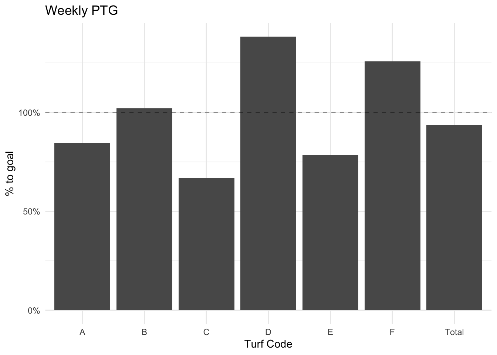

Chapter 3 reporting-googlesheets
Goal: Create a daily percent to goal report
As described previously, a common practice is to export aggregated code from Civis into a Google Sheet. In this section we will work with Google Sheets to create a report that can be used to schedule automatic reporting.
To use the googlesheets package you must first install it (install.packages("googlesheets")). To load a spreadsheet use the gs_title() or gs_url() functions. The former takes the name of the sheet and the latter uses the url of it. Once this line is ran Google will open and require you to authenticate. This will create .httr-oath file in your working directory. This contains your authorization token which will be used later for automating this workflow.
library(googlesheets)
# register the sheet
sheet <- gs_url("https://docs.google.com/spreadsheets/d/1tROfDCP8meClFSDupPJViEQVIZ-Fsn36U9on7qSERzs/edit?usp=sharing")## Sheet-identifying info appears to be a browser URL.
## googlesheets will attempt to extract sheet key from the URL.## Putative key: 1tROfDCP8meClFSDupPJViEQVIZ-Fsn36U9on7qSERzs## Auto-refreshing stale OAuth token.## Sheet successfully identified: "R 4 Progressive Campaigns"# read the `weekly_canvas` tab
weekly_canvass <- gs_read(sheet, "weekly_canvass")## Accessing worksheet titled 'weekly_canvass'.## Parsed with column specification:
## cols(
## turf_code = col_character(),
## week = col_double(),
## n_pledged = col_double(),
## vol_yes = col_double()
## )# read the `goals` tab
goals <- gs_read(sheet, "goals")## Accessing worksheet titled 'goals'.## Parsed with column specification:
## cols(
## week = col_double(),
## region = col_character(),
## goal = col_double()
## )weekly_canvass## # A tibble: 66 x 4
## turf_code week n_pledged vol_yes
## <chr> <dbl> <dbl> <dbl>
## 1 A 1 114 41
## 2 A 2 109 28
## 3 A 3 96 33
## 4 A 4 121 34
## 5 A 5 95 32
## 6 A 6 99 29
## 7 A 7 78 28
## 8 A 8 111 29
## 9 A 9 119 34
## 10 A 10 119 27
## # … with 56 more rowsgoals## # A tibble: 312 x 3
## week region goal
## <dbl> <chr> <dbl>
## 1 1 A 120
## 2 1 B 130
## 3 1 C 70
## 4 1 D 120
## 5 1 E 90
## 6 1 F 130
## 7 2 A 110
## 8 2 B 90
## 9 2 C 130
## 10 2 D 70
## # … with 302 more rowsNotice that this code creates two tibbles in memory. Now everything else is the same. We will work within the context of an R Markdown document (intro to R Markdown).
We want to create a simple report which will be emailed out to the organizing director each morning with the most up to date weekly PTG.
Since this is a weekly report, we want to filter to the current week. In this case, the most recent data is from the 11th week of the month. We will filter both the weekly_canvass and goals tibbles to these weeks and then join. Note that it is important to filter before joining as joining can be computationally intensive. We want to reduce the data before joining it.
current_week <- weekly_canvass %>%
filter(week == 11) %>%
left_join(filter(goals, week == 11),
by = c("turf_code" = "region", "week")) %>%
mutate(ptg = n_pledged / goal)
current_week## # A tibble: 6 x 6
## turf_code week n_pledged vol_yes goal ptg
## <chr> <dbl> <dbl> <dbl> <dbl> <dbl>
## 1 A 11 76 20 90 0.844
## 2 B 11 51 20 50 1.02
## 3 C 11 87 17 130 0.669
## 4 D 11 83 31 60 1.38
## 5 E 11 55 20 70 0.786
## 6 F 11 88 29 70 1.26While it nice to have each region’s PTG, it’s also useful to have the entire program weekly PTG. We can create an aggregate table and bind it to the existing table.
totals <- current_week %>%
bind_rows(
current_week %>%
summarise(n_pledged = sum(n_pledged),
goal = sum(goal),
ptg = n_pledged / goal,
vol_yes = sum(vol_yes),
turf_code = "Total",
week = mean(week))
)
totals## # A tibble: 7 x 6
## turf_code week n_pledged vol_yes goal ptg
## <chr> <dbl> <dbl> <dbl> <dbl> <dbl>
## 1 A 11 76 20 90 0.844
## 2 B 11 51 20 50 1.02
## 3 C 11 87 17 130 0.669
## 4 D 11 83 31 60 1.38
## 5 E 11 55 20 70 0.786
## 6 F 11 88 29 70 1.26
## 7 Total 11 440 137 470 0.936totals %>%
ggplot(aes(turf_code, ptg)) +
geom_col() +
geom_hline(yintercept = 1, lty = 2, alpha = .4) +
theme_minimal() +
scale_y_continuous(labels = scales::percent_format()) +
labs(title = "Weekly PTG",
y = "% to goal",
x = "Turf Code")
It is important that a clean table is presented alongside the chart. For this we will use knitr::kable().
totals %>%
mutate(ptg = ptg * 100) %>%
select(`Turf Code` = turf_code,
`# Pledged` = n_pledged,
Goal = goal,
`% to Goal` = ptg) %>%
knitr::kable(digits = 2)| Turf Code | # Pledged | Goal | % to Goal |
|---|---|---|---|
| A | 76 | 90 | 84.44 |
| B | 51 | 50 | 102.00 |
| C | 87 | 130 | 66.92 |
| D | 83 | 60 | 138.33 |
| E | 55 | 70 | 78.57 |
| F | 88 | 70 | 125.71 |
| Total | 440 | 470 | 93.62 |